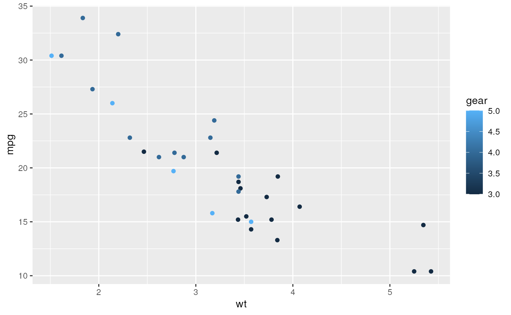

theme_pubr(): Create a publication ready theme
theme_pubclean(): a clean theme without axis lines, to direct more attention to the data.
labs_pubr(): Format only plot labels to a publication ready style
theme_classic2(): Create a classic theme with axis lines.
clean_theme(): Remove axis lines, ticks, texts and titles.
clean_table_theme(): Clean the the theme of a table, such as those created by
ggsummarytable()
.
theme_pubr(
base_size = 12,
base_family = "",
border = FALSE,
margin = TRUE,
legend = c("top", "bottom", "left", "right", "none"),
x.text.angle = 0
)
theme_pubclean(base_size = 12, base_family = "", flip = FALSE)
labs_pubr(base_size = 14, base_family = "")
theme_classic2(base_size = 12, base_family = "")
clean_theme()
clean_table_theme()Arguments
- base_size
base font size
- base_family
base font family
- border
logical value. Default is FALSE. If TRUE, add panel border.
- margin
logical value. Default is TRUE. If FALSE, reduce plot margin.
- legend
character specifying legend position. Allowed values are one of c("top", "bottom", "left", "right", "none"). Default is "top" side position. to remove the legend use legend = "none". Legend position can be also specified using a numeric vector c(x, y). In this case it is possible to position the legend inside the plotting area. x and y are the coordinates of the legend box. Their values should be between 0 and 1. c(0,0) corresponds to the "bottom left" and c(1,1) corresponds to the "top right" position. For instance use legend = c(0.8, 0.2).
- x.text.angle
Rotation angle of x axis tick labels. Default value is 0. Use 90 for vertical text.
- flip
logical. If TRUE, grid lines are added to y axis instead of x axis.
Examples
p <- ggplot(mtcars, aes(x = wt, y = mpg)) +
geom_point(aes(color = gear))
# Default plot
p

# Use theme_pubr()
p + theme_pubr()
 # Format labels
p + labs_pubr()
# Format labels
p + labs_pubr()